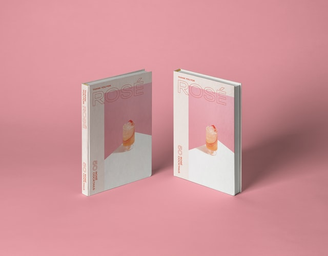

金秀贤又一部爆款新剧，才播一集就飙到9.1分 爆款 히트작품, 히트시키다. / 飙 biāo 돌풍, 위로 올라가다
从2007年《泡菜奶酪微笑》出道，到2012年《拥抱太阳的月亮》引爆韩国收视奇迹，再到2014年《来自星星的你》成为亚洲现象级韩剧，金秀贤用精湛的演技带来一部又一部爆款。近日，因服兵役而暂别娱乐圈两年的他，又再一次以男主角的身份奉上了新剧《虽然是精神病但没关系》，并且一开播就收获极佳口碑，果然不负众望。 泡菜奶酪微笑 pàocài năilào wēixiào 김치치즈스마일 / 拥抱太阳的月亮 해를 품은 달 / 引爆 yǐnbào 폭발을 일으키다 / 现象级 경이로운 / 精湛 jīngzhàn 정밀하고 깊다 / 娱乐圈 yúlè quān 연예계 奉上 fèngshàn 드리다, 올리다 / 不负众望 bú fù zhòng wàng 대중의 기대에 부응하다. 2007년 <김치치즈스마일>을 시작으로, 2012년 <해를 품은 달>로 한국에서 폭발적인 시청률 기적을 일으켰고, 2014년 다시 <별에서 온 그대>는 아시아 역대급의 한국 드라마가 되었다. 김수현은 정밀하고 깊은 연기력을 통해 매 드라마를 성공으로 이끌었다. 최근 군복무때문에 연예계를 잠시 떠났었던 그는 남자주인공으로 새 드라마 <사이코지만 괜찮아>를 올리게 되었다. 첫 방영부터 아주 좋은 평판을 받음으로써 역시 대중의 기대에 부응했다.